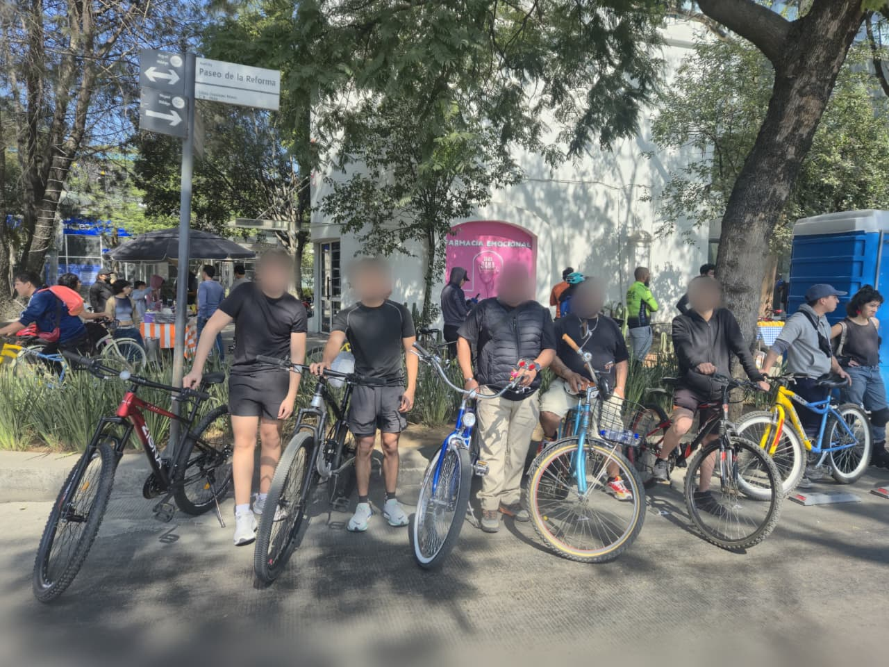

MTB y RODADAS

Rodadas largas

Tardes de rodadas
Salir a rodar es pura libertad. Me encanta esa mezcla de adrenalina en las bajadas y la tranquilidad de estar fuera de casa. Es el pretexto perfecto para ensuciarse un poco, explorar rutas nuevas y olvidarse de todo por un buen rato.